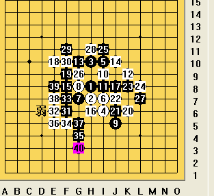
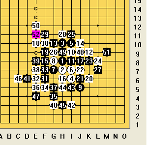

和干儿子的一盘棋
#1 和干儿子的一盘棋作者：茗弈小刀 发表时间：2009-4-26 13:11:29
=======上图对应的爱五子棋谱代码如下，以便你拆解：========
h8h7h10i6i10i7g7g8j5i9i8k9g10j10f8e10f9h6j8k6j6j7k8l8i11g9l7h11f11f10f6e6
======================================================
今天和我那臭小子下了二盘棋，这盘是瑞的大定。到31手定型，基本是和棋。
=======上图对应的爱五子棋谱代码如下，以便你拆解：========
h8h7h10i6i10i7g7g8j5i9i8k9g10j10f8e10f9h6j8k6j6j7k8l8i11g9l7h11f11f10f6e6f7f5g4
======================================================臭小子下了这个冲四的33保守了感觉，33应该拓展D9比较好，35罗罗可能考虑白下边有棋，所以选择档下边，弱了，黑的先手呀，先手要把握住不要轻易丢掉，所以35反个方向更佳。

臭小子41手也感觉软了，在对手没有杀的情况下，自己就要考虑怎么做棋。而做棋的时候要多利用眠三。黑下边由于有个40手，故不好拓展，这样可以在左上跳眠三往上边拓展出去。

后边几手控制得很好，51手是不合时宜的。落子前一定先分析对手的棋，他这一手是什么意思，想清楚了再考虑自己的棋。51在50下边穿一子就没有杀了。
从今天的棋中感觉儿子的棋又成熟了许多，防守意识也增强了不少，但是，不要过多拘泥，该防守还是该进攻？一定要判断准确。
［ 撒蓉儿 于 2009-5-27 22:44:38 时花20金币送鲜花一朵］
#2 Re:和干儿子的一盘棋作者：茗弈小刀 发表时间：2009-4-26 14:13:04
另外请27刀哥哥针对罗罗的问题面授帮助下，谢谢。#3 Re:和干儿子的一盘棋作者：启蒙 发表时间：2009-4-26 17:06:41
LS'LS的棋子怎么是方的了？呵呵
这小孩子也太猛了吧，不过现在的小朋友都很生猛，我四岁的侄子今天在QQ斗地主还赢了好多豆呢
#4 Re:和干儿子的一盘棋作者：冷酒一杯 发表时间：2009-4-26 18:14:56
这小孩，哪位的高徒，如此了得。茗奕-天天
#5 Re:和干儿子的一盘棋作者：茗弈小刀 发表时间：2009-4-26 18:20:59
这小孩是我的干儿子，茗弈罗罗，也是27刀哥哥的学生，5月份要参加全团的，到时候请各位叔叔多照顾哟。ShowPost.asp?ThreadID=5888#6 Re:和干儿子的一盘棋作者：香雪美景 发表时间：2009-4-27 16:47:07
太厉害了,现在的小孩子可不敢轻看啊!#7 Re:Re:和干儿子的一盘棋作者：闫荣辉 发表时间：2009-4-28 10:59:03
引用：祝福中~~~~~
原文由 茗弈小刀 发表于 2009-4-26 18:20:59 :
这小孩是我的干儿子，茗弈罗罗，也是27刀哥哥的学生，5月份要参加全团的，到时候请各位叔叔多照顾哟。ShowPost.asp?ThreadID=5888

#8 Re:和干儿子的一盘棋作者：茗奕的飞猪 发表时间：2009-4-28 22:49:02
罗罗比我厉害啊